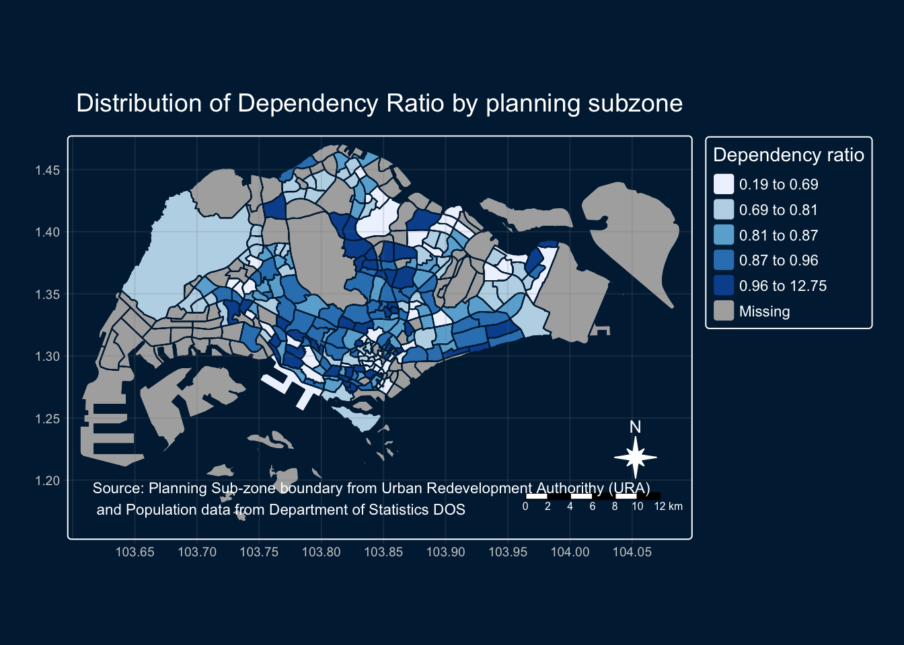

pacman::p_load(sf, tmap, tidyverse, rvest)01b - Thematic Mapping and GeoVisualisation with R
Hands-on 01b Overview
2.1 Objectives
In this hands-on exercise, the key R package use is tmap package in R. Beside tmap package, five other R packages will be used. They are:
- readr for importing delimited text file,
- tidyr for tidying data,
- dplyr for wrangling data and
- sf for handling geospatial data.
- rvest for scraping (or harvesting) data from web pages.
Among the five packages, readr, tidyr and dplyr are part of tidyverse package.
2.2 Getting started
The code chunk below will be used to install and load these packages in RStudio. We don’t have to install readr, tidyr and dplyr individually.
2.3 Importing Data into R
2.3.1 The Data
Two data set will be used to create the choropleth map. They are:
Master Plan 2019 Subzone Boundary (No Sea) (KML) can be downloaded at data.gov.sg This is a geospatial data. It consists of the geographical boundary of Singapore at the planning subzone level. The data is based on URA Master Plan 2019.
Singapore Residents by Planning Area / Subzone, Age Group, Sex and Type of Dwelling, June 2024 in csv format (i.e.
respopagesextod2024.csv). This is an aspatial data fie. It can be downloaded at Department of Statistics, Singapore. Although it does not contain any coordinates values, but it’s PA and SZ fields can be used as unique identifiers to georeference to Master Plan 2019 Subzone Boundary.
2.3.2 Importing Geospatial Data into R
The code chunk below uses the st_read() function of sf package to import MP14_SUBZONE_WEB_PL shapefile into R as a simple feature data frame called mpsz.
mpsz <- st_read("data/geospatial/MasterPlan2019SubzoneBoundaryNoSeaKML.kml")Reading layer `URA_MP19_SUBZONE_NO_SEA_PL' from data source
`/Users/cathyc/Documents/cathyschu/ISSS626GEO/Hands-on_Ex/Hands-on_Ex01/data/geospatial/MasterPlan2019SubzoneBoundaryNoSeaKML.kml'
using driver `KML'
Simple feature collection with 332 features and 2 fields
Geometry type: MULTIPOLYGON
Dimension: XY, XYZ
Bounding box: xmin: 103.6057 ymin: 1.158699 xmax: 104.0885 ymax: 1.470775
z_range: zmin: 0 zmax: 0
Geodetic CRS: WGS 842.3.2.1 Tidying data
Function to extract values from the HTML description
extract_kml_field <- function(html_text, field_name) {
if (is.na(html_text) || html_text == "") return(NA_character_)
page <- read_html(html_text)
rows <- page %>% html_elements("tr")
value <- rows %>%
keep(~ html_text2(html_element(.x, "th")) == field_name) %>%
html_element("td") %>%
html_text2()
if (length(value) == 0) NA_character_ else value
}mpsz <- mpsz %>%
mutate(
REGION_N = map_chr(Description, extract_kml_field, "REGION_N"),
PLN_AREA_N = map_chr(Description, extract_kml_field, "PLN_AREA_N"),
SUBZONE_N = map_chr(Description, extract_kml_field, "SUBZONE_N"),
SUBZONE_C = map_chr(Description, extract_kml_field, "SUBZONE_C")
) %>%
select(-Name, -Description) %>%
relocate(geometry, .after = last_col())We can examine the content of mpsz by using the code chunk below.
mpszSimple feature collection with 332 features and 4 fields
Geometry type: MULTIPOLYGON
Dimension: XY, XYZ
Bounding box: xmin: 103.6057 ymin: 1.158699 xmax: 104.0885 ymax: 1.470775
z_range: zmin: 0 zmax: 0
Geodetic CRS: WGS 84
First 10 features:
REGION_N PLN_AREA_N SUBZONE_N SUBZONE_C
1 CENTRAL REGION BUKIT MERAH DEPOT ROAD BMSZ12
2 CENTRAL REGION BUKIT MERAH BUKIT MERAH BMSZ02
3 CENTRAL REGION OUTRAM CHINATOWN OTSZ03
4 CENTRAL REGION DOWNTOWN CORE PHILLIP DTSZ04
5 CENTRAL REGION DOWNTOWN CORE RAFFLES PLACE DTSZ05
6 CENTRAL REGION OUTRAM CHINA SQUARE OTSZ04
7 CENTRAL REGION BUKIT MERAH TIONG BAHRU BMSZ10
8 CENTRAL REGION DOWNTOWN CORE BAYFRONT SUBZONE DTSZ12
9 CENTRAL REGION BUKIT MERAH TIONG BAHRU STATION BMSZ04
10 CENTRAL REGION DOWNTOWN CORE CLIFFORD PIER DTSZ06
geometry
1 MULTIPOLYGON Z (((103.8145 ...
2 MULTIPOLYGON Z (((103.8221 ...
3 MULTIPOLYGON Z (((103.8438 ...
4 MULTIPOLYGON Z (((103.8496 ...
5 MULTIPOLYGON Z (((103.8525 ...
6 MULTIPOLYGON Z (((103.8486 ...
7 MULTIPOLYGON Z (((103.8311 ...
8 MULTIPOLYGON Z (((103.8589 ...
9 MULTIPOLYGON Z (((103.8283 ...
10 MULTIPOLYGON Z (((103.8552 ...Learning:
Only the first 10 records are displayedby default to avoid overwhelming the console, especially with large datasets.
2.3.3 Importing Attribute Data into R
Next, we will import respopagesextod2024.csv file into RStudio and save the file into an tibble dataframe called popdata.
The task will be performed by using read_csv() function of readr package as shown in the code chunk below.
popdata <- read_csv("data/aspatial/respopagesextod2024.csv")2.3.4 Data Preparation
Before a thematic map can be prepared, we need to prepare a data table with year 2020 values. The data table should include the variables PA, SZ, YOUNG, ECONOMY ACTIVE, AGED, TOTAL, DEPENDENCY.
YOUNG: age group 0 to 4 until age groyup 20 to 24,
ECONOMY ACTIVE: age group 25-29 until age group 60-64,
AGED: age group 65 and above,
TOTAL: all age group, and
DEPENDENCY: the ratio between young and aged against economy active group
2.3.4.1 Data wrangling
The following data wrangling and transformation functions will be used:
pivot_wider() of tidyr package, and
mutate(), filter(), group_by() and select() of dplyr package
popdata2024 <- popdata %>%
group_by(PA, SZ, AG) %>%
summarise(`POP` = sum(`Pop`)) %>%
ungroup()%>%
pivot_wider(names_from=AG,
values_from=POP) %>%
mutate(YOUNG = rowSums(.[3:6])
+rowSums(.[12])) %>%
mutate(`ECONOMY ACTIVE` = rowSums(.[7:11])+
rowSums(.[13:15]))%>%
mutate(`AGED`=rowSums(.[16:21])) %>%
mutate(`TOTAL`=rowSums(.[3:21])) %>%
mutate(`DEPENDENCY` = (`YOUNG` + `AGED`)
/`ECONOMY ACTIVE`) %>%
select(`PA`, `SZ`, `YOUNG`,
`ECONOMY ACTIVE`, `AGED`,
`TOTAL`, `DEPENDENCY`)2.3.4.2 Joining the attribute data and geospatial data
Before we can perform the georelational join, one extra step is required to convert the values in PA and SZ fields to uppercase. This is because the values of PA and SZ fields are made up of upper- and lowercase. On the other hand, the SUBZONE_N and PLN_AREA_N are in uppercase.
popdata2024 <- popdata2024 %>%
mutate_at(.vars = vars(PA, SZ),
.funs = list(toupper)) %>%
filter(`ECONOMY ACTIVE` > 0)Next, left_join() of dplyr is used to join the geographical data and attribute table using planning subzone name e.g. SUBZONE_N and SZ as the common identifier.
mpsz_pop2024 <- left_join(mpsz, popdata2024,
by = c("SUBZONE_N" = "SZ"))Learning:
- left_join() of dplyr package is used with
mpszsimple feature data frame as the left data table is to ensure that the output will be a simple features data frame.
mpsz_pop2024 is written in a rsd file, shown below.
write_rds(mpsz_pop2024, "data/rds/mpsz_pop2024.rds")2.4 Choropleth Mapping Geospatial Data Using tmap
Choropleth mapping involves the symbolisation of enumeration units, such as countries, provinces, states, counties or census units, using area patterns or graduated colors. For example, a social scientist may need to use a choropleth map to portray the spatial distribution of aged population of Singapore by Master Plan 2014 Subzone Boundary.
Two approaches can be used to prepare thematic map using tmap, they are:
Plotting a thematic map quickly by using qtm().
Plotting highly customisable thematic map by using tmap elements.
2.4.1 Plotting a choropleth map quickly by using qtm()
The easiest and quickest to draw a choropleth map using tmap is using qtm(). It is concise and provides a good default visualisation in many cases.
The code chunk below will draw a cartographic standard choropleth map as shown below.
tmap_mode("plot")
qtm(shp = mpsz_pop2024, fill = "DEPENDENCY")Things to learn from the code chunk above:
tmap_mode() with “plot” option is used to produce a static map. For interactive mode, “view” option should be used.
fill argument is used to map the attribute (i.e.DEPENDENCY)
2.4.2 Creating a choropleth map by using tmap’s elements
Despite its usefulness of drawing a choropleth map quickly and easily, the disadvantge of qtm() is that it makes aesthetics of individual layers harder to control. To draw a high quality cartographic choropleth map as shown in the figure below, tmap’s drawing elements should be used.
par(bg = "lightblue")
tm_shape(mpsz_pop2024) +
tm_polygons(fill = "DEPENDENCY",
fill.scale = tm_scale_intervals(
style = "quantile",
n = 5,
values = "brewer.blues"),
fill.legend = tm_legend(
title = "Dependency ratio")) +
tm_title("Distribution of Dependency Ratio by planning subzone") +
tm_layout(frame = TRUE,
bg.color = "lightblue",
outer.bg.color = "lightblue") +
tm_borders(fill_alpha = 0.5) +
tm_compass(type="8star", size = 2) +
tm_scalebar() +
tm_grid(alpha =0.2) +
tm_credits("Source: Planning Sub-zone boundary from Urban Redevelopment Authorithy (URA)\n and Population data from Department of Statistics DOS",
position = c("left", "bottom"))